Find the place that fits your life.
Before the practical move comes the bigger question: where in New Zealand could you and your family feel at home? These guides go local: the everyday, the cost of living, the lifestyle and what the work feels like, region by region.

across both islands
Thirteen places to picture your life
From the biggest city to the quieter regions where demand is high and life moves at a different pace. Each guide covers lifestyle, healthcare, cost of living, housing and schooling, with a full PDF to download and keep.
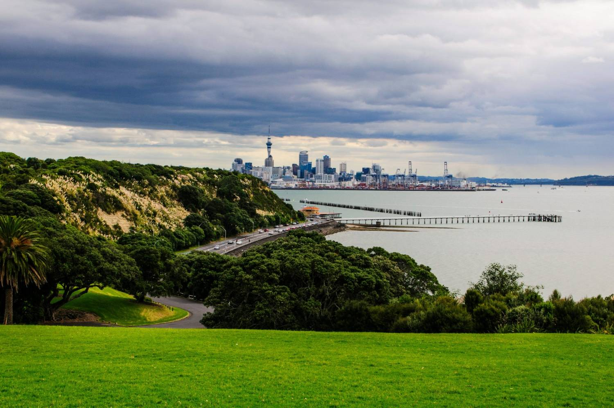
Largest cityAuckland
New Zealand’s biggest city, the widest range of specialist services, diverse communities and the most career options, wrapped around two harbours.
Read the guide →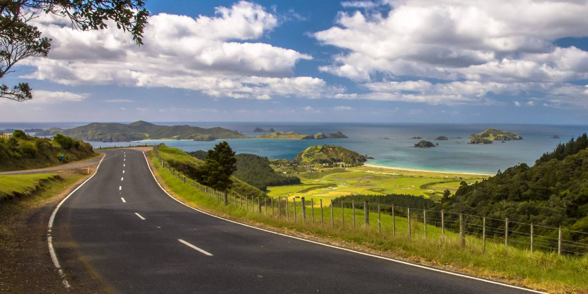
Northland
Subtropical coastline and a relaxed pace in the winterless north.
Read the guide →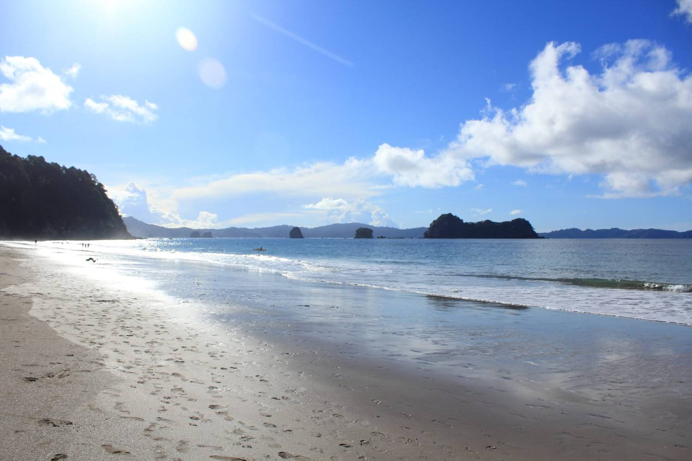
Waikato
A growing health sector in NZ’s green heartland, close to coast and mountains.
Read the guide →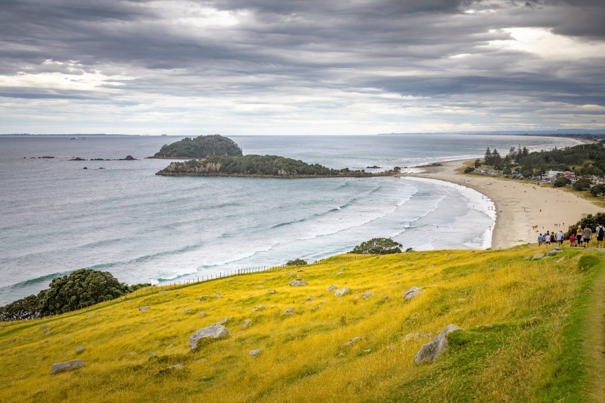
Bay of Plenty
Beaches, sunshine and a fast-growing region on the eastern coast.
Read the guide →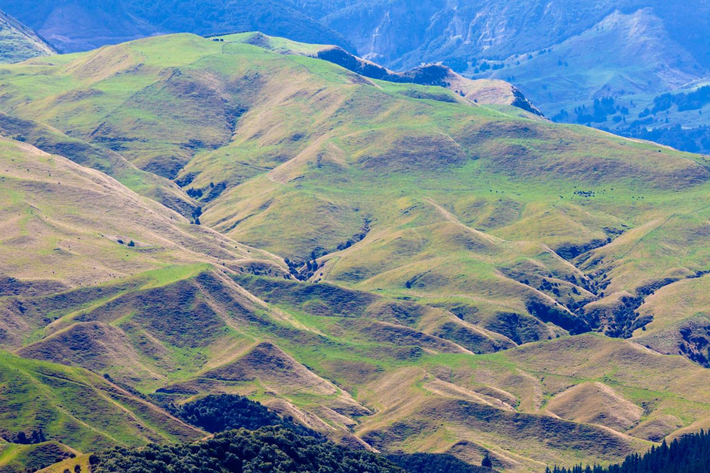
Hawke’s Bay
Art-deco towns, wine country and a warm, easy lifestyle.
Read the guide →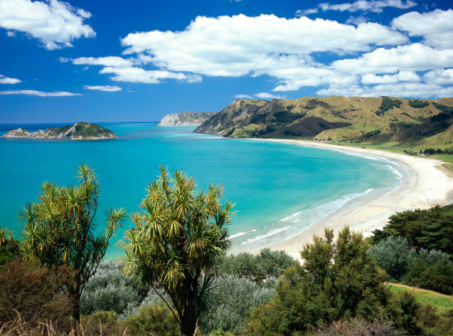
Gisborne
First light, real clinical autonomy, and world-class surf ten minutes from work.
Read the guide →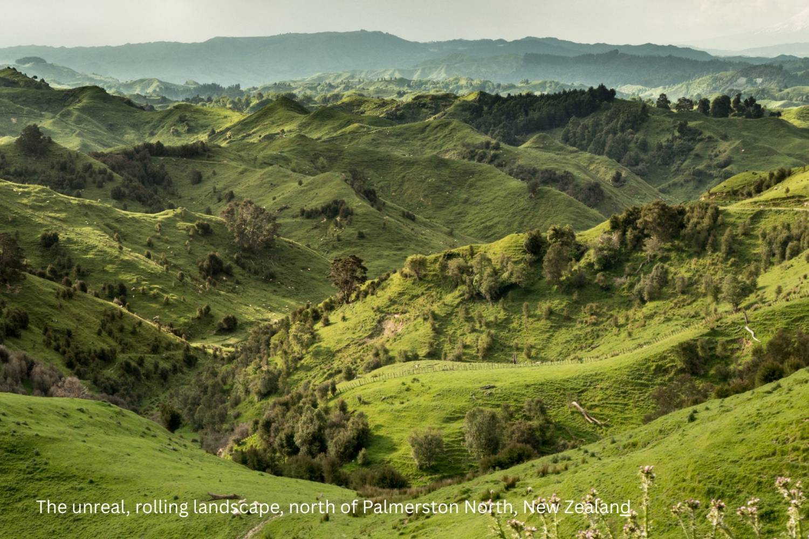
Palmerston North
A friendly, affordable student city at the heart of the lower North Island.
Read the guide →Wellington
The compact, creative capital: walkable, cultured and on the water.
Read the guide →
Nelson Tasman
Sunshine, national parks and an outdoor life at the top of the South Island.
Read the guide →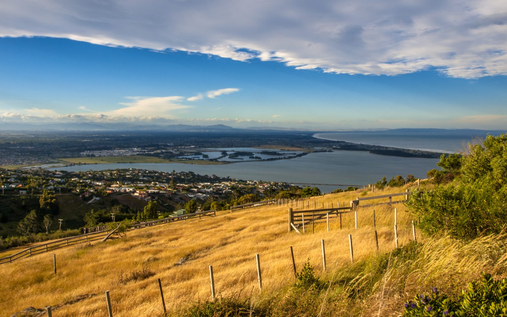
Christchurch
A revitalised garden city with room to breathe and the Alps on the doorstep.
Read the guide →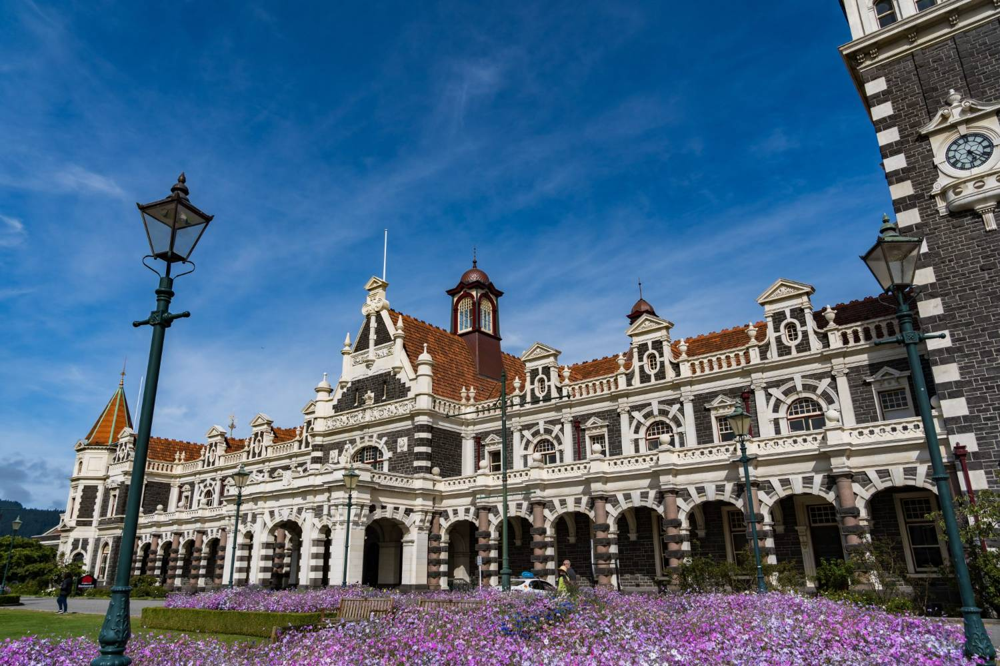
Dunedin
Heritage, wildlife and a spirited university city in the deep south.
Read the guide →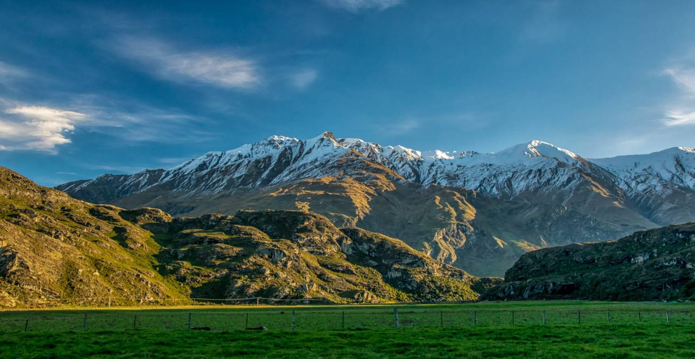
Central Otago
Lakes, mountains and four real seasons: New Zealand’s alpine adventure heart.
Read the guide →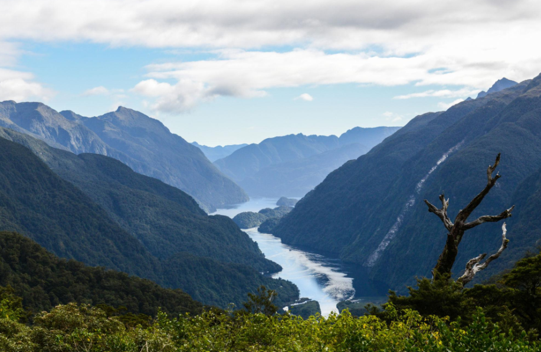
Southland
A base hospital, the cheapest city housing in the country, and Fiordland two hours away.
Read the guide →Moving to New Zealand
When you’ve found the region that fits, the national guide walks you through the practical move: healthcare, banking, housing, schools and settling in, so nothing catches you by surprise.